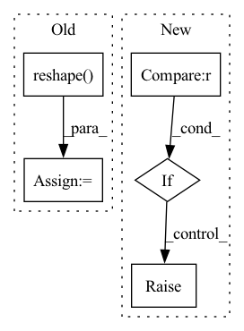

Pattern ID :18739
Before Change
R = R_[:, :3]
offset = R_[:, -1].reshape(3, 1)
alpha_shp = param[12:52].reshape(-1, 1)
alpha_exp = param[52:].reshape( -1, 1)
return R, offset, alpha_shp, alpha_exp
// def recon_sparse(param, roi_box, size):After Change
// pre-defined templates for parameter
n = param.shape[0]
if n == 62 :
trans_dim, shape_dim, exp_dim = 12, 40, 10
elif n == 72:
trans_dim, shape_dim, exp_dim = 12, 40, 20
elif n == 141:
trans_dim, shape_dim, exp_dim = 12, 100, 29
else:
raise Exception(f"Undefined templated param parsing rule")
R_ = param[:trans_dim].reshape(3, -1)
R = R_[:, :3]In pattern: SUPERPATTERN
Frequency: 3
Non-data size: 5
Instances Fragment ID: 60937424
Project Name: cleardusk/3ddfa_v2
Commit Name: 82c3b1c119f0eedd2d56885867105ec902c5744d
Time: 2020-10-04
Author: guojianzhu1994@foxmail.com
File Name: utils/tddfa_util.py
M Class Name: AnonimousClass
N Class Name: AnonimousClass
M Method Name: _parse_param(1)
N Method Name: _parse_param(1)
M Parent Class:
N Parent Class:
M File Name: utils/tddfa_util.py
N File Name: utils/tddfa_util.py
M Start Line: 90
M End Line: 94
N Start Line: 86
N End Line: 100
Before Change
// For plotting
xs = np.reshape(xs, (-1, 11, 6))
us = np.reshape( us, (-1, 11, 3))
import matplotlib.pyplot as plt
for i in range(100):After Change
def load_data(system="double_integrator"):
if system == "double_integrator" :
import pickle
path = dir_path+"/../../datasets/double_integrator/"
with open(path+"xs.pkl", "rb") as f:
xs = pickle.load(f)
with open(path+"us.pkl", "rb") as f:
us = pickle.load(f)
elif system == "quadrotor":
import pandas as pd
xs = (
pd.read_csv("~/Downloads/quadrotor_nlmpc_x.csv", sep=",", header=None)
.to_numpy()
.T
)
us = (
pd.read_csv("~/Downloads/quadrotor_nlmpc_u.csv", sep=",", header=None)
.to_numpy()
.T
)
else:
raise NotImplementedError
return xs, us
Fragment ID: 60937442
Project Name: mit-acl/nn_robustness_analysis
Commit Name: c9b51e13d331027e4154999bc43026a9daf05ae0
Time: 2021-11-09
Author: mfe@mit.edu
File Name: nn_closed_loop/nn_closed_loop/utils/nn.py
M Class Name: AnonimousClass
N Class Name: AnonimousClass
M Method Name: load_data(1)
N Method Name: load_data(0)
M Parent Class:
N Parent Class:
M File Name: nn_closed_loop/nn_closed_loop/utils/nn.py
N File Name: nn_closed_loop/nn_closed_loop/utils/nn.py
M Start Line: 91
M End Line: 113
N Start Line: 96
N End Line: 126
Before Change
self.clf.fit(_X, _y, sample_weight=sample_weight)
while True:
unlabled_y_d = self.clf.decision_function(unlabled_X) // linear: w^Tx + b
unlabled_y_= unlabled_y.reshape( -1)
epsilon = 1 - unlabled_y_ * unlabled_y_d // calculate function margin
positive_set, positive_id = epsilon[unlabled_y > 0], u_X_id[unlabled_y > 0]
negative_set, negative_id = epsilon[unlabled_y < 0], u_X_id[unlabled_y < 0]
positive_max_id = positive_id[np.argmax(positive_set)]After Change
// for i in range(len(y)):
// if y[i]==0:
// y[i]=-1
if len(classes)!=2 :
raise ValueError("TSVM can only be used in binary classification.")
// print(classes)
self.class_dict={classes[0]:-1,classes[1]:1} Fragment ID: 60937449
Project Name: ygzwqzd/lamda-ssl
Commit Name: 583dd75539ccb548ccfa1f9f19745f30ddb05288
Time: 2022-02-09
Author: 1129198222@qq.com
File Name: Semi_sklearn/Model/Classifier/TSVM.py
M Class Name: TSVM
N Class Name: TSVM
M Method Name: fit(4)
N Method Name: fit(4)
M Parent Class: ClassifierMixin,TransductiveEstimator
N Parent Class: ClassifierMixin,TransductiveEstimator
M File Name: Semi_sklearn/Model/Classifier/TSVM.py
N File Name: Semi_sklearn/Model/Classifier/TSVM.py
M Start Line: 65
M End Line: 92
N Start Line: 66
N End Line: 122